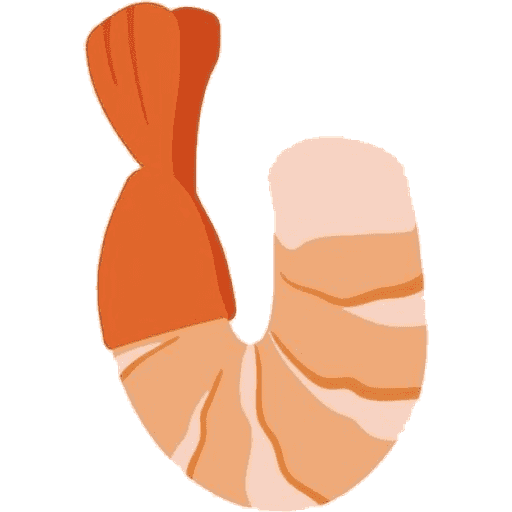

EBI Studying in Japan
JAPAN STUDY SUPPORT
日本語
English
简体中文
繁體中文
☰
EBI STUDY RESOURCE LIBRARY
✓
✓
✓
01 · EBI RESOURCE
02 · EBI RESOURCE
03 · EBI RESOURCE
01
02
03
01 · PRIVATE UNIVERSITY
02 · NATIONAL UNIVERSITY
03 · INTERVIEW & ESSAY
132+
UNIVERSITIES
148+
PROGRAMS
2026
DATA VERSION
PUBLIC
MEMBERS
PLAN
EBI ADMISSIONS LAB
01 · WRITING
02 · INTERVIEW
03 · MATCH
04 · PLANNER
0
/ 8,000
0
800
0
400
TOEFL iBT
TOEIC L&R
01
02
03
YOUR STORY STARTS HERE